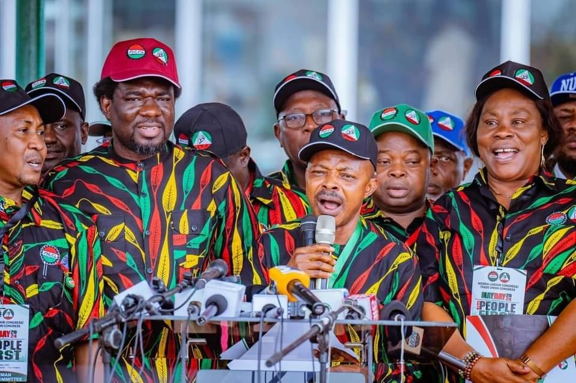

Minimum wage: Labour rejects govs bid to take over negotiations
June 29, 2024  Chukwudi Akasike and Olufemi AdediranGovs unfriendly, some states yet to pay N30, 000 approved five years ago – NLC
States should be allowed to negotiate with workers, govs insist
Organised Labour, including the Nigeria Labour Congress and the Trade Union Congress, has rejected the proposal of the Southern Governors’ Forum to decentralise minimum wage negotiations to state governments.
The NLC condemned the proposal as “unfriendly and anti-worker”, noting that allowing states to determine their minimum wages would be detrimental to workers’ welfare.
On Friday, The PUNCH had reported that the Southern Governors’ Forum sought for states to be allowed to negotiate the minimum wage for workers independently. At the end of a meeting held on Monday at the Ogun State Presidential Lodge in Abeokuta, the forum resolved that wages should be reflective of the cost of living.
This was revealed in a communique issued from the meeting and signed by the newly-appointed Chairman of the forum, Governor Dapo Abiodun of Ogun State; and Vice-Chairman, Prof Charles Soludo of Anambra State.
The meeting was attended by Governors Seyi Makinde of Oyo State; Babajide Sanwo-Olu of Lagos; Godwin Obaseki of Edo; Hope Uzodinma of Imo; Abiodun Oyebanji of Ekiti; Duoye Diri of Bayelsa; Ademola Adeleke of Osun; Umo Eno of Akwa Ibom; Siminalayi Fubara of Rivers; and Bassey Otu of Cross River.
Other attendees included Governors Francis Nwifuru of Ebonyi State; Lucky Aiyedatiwa of Ondo; Peter Mbah of Enugu; Sheriff Oborevwori of Delta State; and Alex Otti of Abia State.
“The forum discussed the minimum wage demanded by Labour and unanimously agreed that the minimum wage should be reflective of the cost of living, and that each state should be allowed to negotiate its minimum wage,” the communique stated.
Meanwhile, the Presidency had on Monday appealed to Nigerians not to put unnecessary pressure on the President, assuring them that the Federal Government would transmit the proposed bill on the new minimum wage to the National Assembly once it was ready.
The Special Adviser to the President on Information and Strategy, Bayo Onanuga, made the plea in a terse statement sent to The PUNCH on Thursday.
“People should be patient,” he stated.
While Organised Labour is adamant about its N250,000 minimum wage demand, the state governors said that paying even the N62,000 proposed by the Federal Government would plunge many states into debt.
This was even as President Bola Tinubu demanded more time for consultation on Wednesday.
Labour insists on national minimum wage
Reacting to the proposal of the governors, the National Treasurer of the NLC, Akeem Ambali, in an interview with Saturday PUNCH, insisted that the governors had no power to negotiate the new minimum wage.
He added that the governors were compelled by law to implement the new national minimum wage. Ambali advised the governors to stop trying to strong-arm the Federal Government and labour with their request to negotiate with labour individually, and rather focus on how they would implement the national minimum wage when it is approved.
Ambali noted that it was regrettable that labour had to always resort to strike actions to get the government to yield to its demands. He asked the governors make public how much they earn, and subject it to negotiations.
He said, “Traditionally, the minimum wage is a national issue; it is not a sub-national negotiation. That is the essence of the Minimum Wage Act, and the law is clear. Governors don’t have the power to negotiate the minimum wage. What they can only negotiate are other allowances, but the minimum wage is a social protection content, and it is not only applicable to Nigeria.
“My advice for the governors is that they should prepare their balance sheet and look at how to implement the national minimum wage once it is approved. They should not stress themselves with the issue of negotiating with Labour on a state level. After all, we have seen what happened in Zamfara, where they refused to pay the current minimum wage (N30,000) until Labour issued an ultimatum, and they quickly started paying. Some states are still not paying the current minimum wage. We know what happened in Anambra, which is the state of the Vice Chairman of the Southern Governors’ Forum, Charles Soludo. When you look at all that, you will realise that some of them (governors) may not have good intentions. In fact, the majority of them are not labour-friendly and they are not pro-workers.”
Ambali further urged President Bola Tinubu to go ahead and recommend the new minimum wage to the National Assembly after consultation with Organised Labour on the agreement.
Related News
“It is a tripartite committee. Two are on the same page, because they are employers, and the two cumulatively amount to one, because they are both employees. It is only the employees that are agitating, because they are the ones that feel the pinch; they know where it hurts. Mr President should concentrate his energy on engaging Labour with realistic data and statistics, which can be obtained from the Federal Bureau of Statistics. How much does it take to feed a family in a month? We should be guided by that. Once we are able to do that and we are sincere about it, the president can then engage labour, and we will resolve this amicably,” he added.
Speaking on the governors who were still defaulting, Ambali said, “While we commend those who are paying the minimum wage, we also condemn those who are not paying, because they are earning their own fantastic salaries. Maybe the option will eventually be to refer salary payment of governors to the minimum wage as well, so we can also put it up for debate by a committee. Once we are able to do that, nobody will have the effrontery to say they want to first negotiate with workers at the governors’ level”
The labour leader also said it was looking as though the Organised Private Sector was being influenced by the government. He noted that when the negotiations began, the OPS stated that no one earned less than N93,000 in any private establishment. He stated that it was shocking that those same people now wanted to pay less than N70,000. He added, “This is because of the influence of some of the governors, who tried to cajole them to fall in line. The OPS, if left on their own, are ready to pay, so all these arguments that they are bringing up are afterthoughts.”
The NLC further cautioned state governors against exhibiting dictatorial tendencies. The congress noted that it was compelled to address the recent statements made by some governors regarding their desire to pay what they deemed fit to Nigerian workers as the minimum wage.
“This notion is not only dictatorial but also undermines the very essence of having a national minimum wage in Nigeria,” the NLC’s spokesperson, Benson Upah, stated in a statement sent to The PUNCH in Abuja.
Explaining the concept of a national minimum wage, Upah noted that it was not an arbitrary decision. He said, “It represents a national wage floor; a baseline below which no worker should be paid. This threshold is a collective agreement that ensures a minimum standard of living for every worker. The governors’ demand to unilaterally determine the minimum wage negates this principle and threatens the welfare of Nigerian workers and the national economy.”
Upah stressed that it was important to remind the governors that the national minimum wage was not synonymous with the individual pay structures of the states, which they implement religiously, reflecting their unique financial capabilities and circumstances. He further added that the diversity in pay structures underscored the flexibility that already existed within the system, allowing states to reward their workers in alignment with their financial realities.
“Furthermore, the governors’ argument appears inconsistent when juxtaposed with the remuneration of political office holders. Why is there no hue and cry when political office holders across the nation receive uniform salaries as determined by the Revenue Mobilisation, Allocation and Fiscal Commission? This double standard, which pits a privileged few against the poor majority, is an issue that should be of concern to those who love this country.”
Caution govs, TUC tells president
Also commenting, the Deputy President of the TUC, Dr Tommy Etim, said Organised Labour would not negotiate with governors. In an interview with Saturday PUNCH, he said, “They are trying to create an unnecessary problem where there is none. I think Mr President should caution them, because pensions and the minimum wage are constitutional issues, and they are under the exclusive legislation.
“If the national minimum wage is approved today, it is incumbent on them to implement it. They can either negotiate it upwards or stop any negotiation, because it is not within their purview. The issue of the national minimum wage is tripartite in nature, and that is what we have done. Once the president ends the consultation, he will definitely send it to the National Assembly for them to legislate on it, so that it will be returned for the president’s assent.”
He added that no state governor had the right to negotiate the minimum wage downwards. “They can only negotiate it upwards. Labour doesn’t even have the right to negotiate the minimum wage with state governors. It is a tripartite committee for a reason.”
Etim further urged workers to remain resolute and believe in the negotiation, hopeful that the Federal Government would do the needful.
Govs should pay better wage – Expert
Reacting to the minimum wage issue, an economist and development expert, Aliyu Ilias, asked the governors to tread with caution. According to Ilias, the governors must surpass their current stance and commit to implementing a higher minimum wage.
He added that despite federal subsidies intended to support state finances, the responsibility lay with state leaders to improve wage conditions.
Ilias said, “I don’t think the governors have an excuse. They just have to move from where they are and pay better minimum wage. Since the Federal Government has removed subsidy, money is getting to them. There are about 20 million Nigerians working for the government, at federal, state and local government levels. And, we have to consider the private sector too. The private sector may not be able to afford that N62,000. Also, the state governments are very key, as they cannot even pay the N30,000. Some are still paying N18,000.”
Ilias also called for clarity from the government regarding the role of the Federation Account Allocation Committee in funding wage increases. He urged concerted efforts between the government and labour unions to resolve the ongoing disagreements, particularly noting tensions between the NLC and southern governors.
“Our government should be clear on whether the Federation Account Allocation Committee is part of the reason they are expecting them to pay that salary to that level. I think the tripartite committee needs to work well. And, the president should consult more to have a better resolution,” he said.